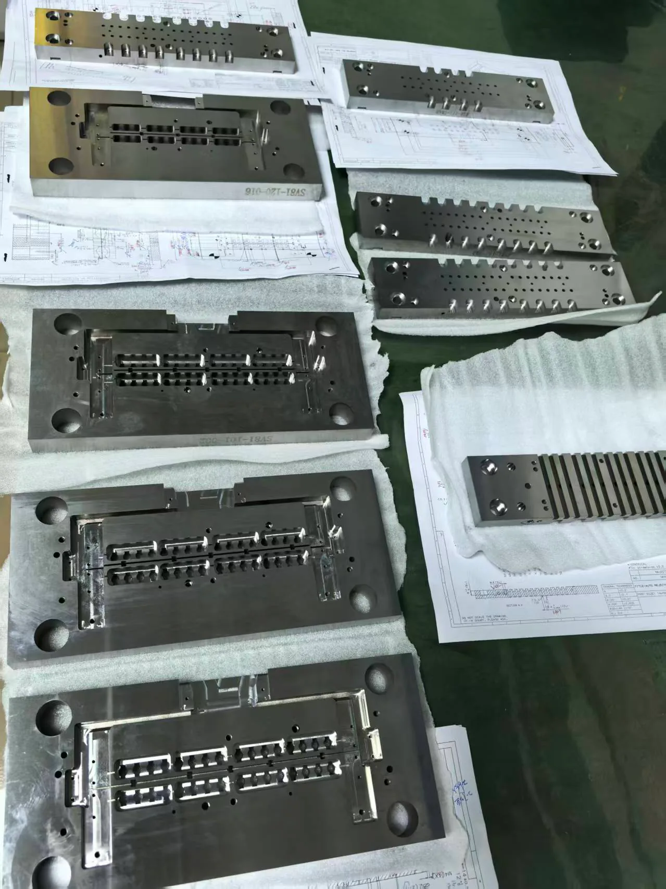

Technical Blog
Wire EDM vs CNC Machining
A practical comparison of wire EDM and CNC machining for buyers evaluating material, geometry, tolerance, surface finish and production cost.

Compare the Feature, Not Just the Machine
In this guide, CNC machining means conventional CNC milling. Wire EDM is also computer controlled, but removes conductive material by electrical discharge rather than a rotating cutter. The useful comparison is which process should create each feature, in what material condition and from which datum.
A mold insert can require both operations. Milling may prepare accessible stock or mounting geometry, while wire EDM forms a detailed conductive contour. Grinding may finish selected reference faces. The combination should follow the drawing, rather than assigning the whole part to a single process.
Geometry and Tool Access
Milling can suit accessible pockets, mounting surfaces and three-dimensional geometry. Cutter diameter, reach and the setup affect access to deep features or narrow corners. A drawing with a small internal radius may require a different route from one with an open, easily reached surface.
Wire EDM needs a continuous wire path through conductive material. It can suit slots, inserts and through-profiles where a milling cutter would be difficult to use. Closed internal contours need a suitable starting hole. Blind cavities require a separate review; sinker EDM and mirror finishing address a different access problem.
Material and Heat-Treatment Condition
Material grade and condition can change the process choice. Accessible geometry in a machinable metal may be suitable for milling, while a detailed profile in hardened steel or tungsten carbide may lead to a wire EDM review. A general process comparison does not establish Jinyi Precision’s capability for every material or feature.
State whether the stock has already been heat treated, which surfaces are finished and where machining allowance remains. If a later operation relies on a datum created earlier, the process plan needs to preserve that relationship. For carbide tooling, also consider the grade, edge support and handling requirements.
Precision and Surface Requirements
A single tolerance figure is not enough to select a process. Identify whether the functional requirement concerns size, profile, location or the relationship between surfaces. Milling performance depends on tooling, fixturing and material behavior; wire EDM performance depends on the cutting conditions and geometry, among other factors.
Surface finish is a separate requirement. Milling leaves marks associated with cutter motion; EDM produces a surface influenced by discharge settings and finishing cuts. State which faces need a particular finish and whether grinding or another finishing stage is included. Do not apply a PG grinding roughness value to an EDM surface.
Mold Inserts: Datums and Assembly Fit
An insert can meet individual size dimensions and still fit poorly if the working contour is misplaced relative to its locating surfaces. Identify the primary assembly datum, the faces that locate the insert and the feature that controls its function. For replacement tooling, note whether it must match an existing holder or remain interchangeable with earlier batches.
For example, an insert with accessible mounting features and a narrow internal contour may be considered for milling before heat treatment, followed by wire EDM and selected grinding operations. This is an illustrative planning sequence, not a delivered customer case. Its suitability depends on the actual drawing and material condition.
Ask where setup changes occur and how the critical datum relationship will be inspected. The profile and form-grinding discussion covers the distinction between a formed edge and the reference surfaces around it.
Production and Quotation Considerations
Compare quotations on the same scope: material condition, preparation, machining, finishing and inspection. Removing stock quickly is only one part of the cost. Small features, difficult access, extra setups and inspection requirements can be more important than the part’s overall size.
Provide quantity, drawing revision and required delivery date, and highlight any areas that must remain free from tool or clamping marks. For a precision mold component, mating-part information and acceptance requirements help clarify the proposed route. A useful quotation identifies the operation assigned to each critical feature and the method used to verify it.
Related Guides and Capabilities
Send an Inquiry
Send drawings for review
Email your drawings directly, or use the form for an initial inquiry. Please include the material, quantity, critical tolerances, surface finish and required delivery date. You do not need to submit the form before emailing us.